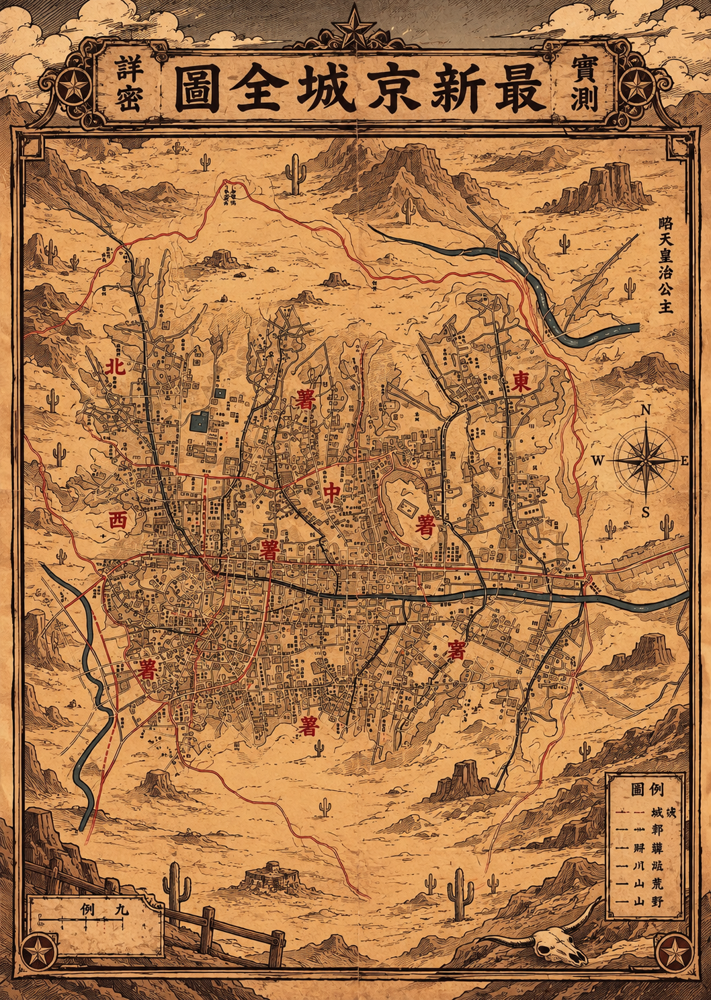

― A STORY OF 1930 GYEONGSEONG
1930년 경성, 어둠이 내려앉은 밤거리
새로운 보석이
발견되었다.
법도 질서도 무너진 무법의 시대.
경성 뒷골목을 뒤흔든 미지의 보석을 둘러싸고 각 세력의 은밀한 추적이 시작됩니다.

수배 개시
1930년 경성, 어둠이 내려앉은 밤거리
법도 질서도 무너진 무법의 시대.
경성 뒷골목을 뒤흔든 미지의 보석을 둘러싸고 각 세력의 은밀한 추적이 시작됩니다.
보석을 노리는 주요 조직과 세력 소개 공간입니다.
 보안관
보안관캐릭터 소개글을 입력하세요.
미지의 보석에 얽힌 비밀을 담는 공간입니다.
